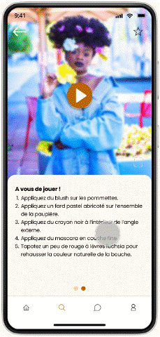
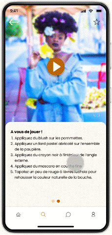

BEAUTIFY
Designing an inclusive and intuitive platform to make beauty accessible for everyone.
Category : Student project
Time frame: January - May 2022
Tools: Miro, Figma, Notion
Mentors: François Violette, Marie Girard
Team: Cindy Long, Adeline Poumaroux, Ines Tabti-Benhari, Diane Volpelière
üéØ
Context and objectives
Introduction
From your physical characteristics to your skin type, your beauty is unique: there is none other like yours. But in the mass information age, finding the appropriate products and techniques that will enhance YOUR features keeps growing more challenging – especially in a white, youth and cis female dominated area.
Our mission statement
To help all our users find the right products and techniques through an intuitive and inclusive platform.
üîç
User research
User Interviews
For the user research phase, we organized a series of interviews with target users to identify their expectations, motivations and frustrations.
Questions & Insights
"What are the reasons that encourage you to wear makeup / learn how to apply makeup?"
All interviewees mentioned self-confidence as their main reason for wearing makeup.
"What criteria do you pay attention to when buying beauty products?"
Interviewees mostly pay attention to:
- the ingredients ("how chemical is it and how is my skin going to react to it?"),
- the price ("is it within my budget?"),
- the brand's ethics ("is it cruelty-free?"),
- user-friendliness.
"What makeup techniques you haven't mastered yet would you like to learn? What has stopped you so far?"
Interviewees all mentioned different makeup techniques they would like to learn. The techniques they mentioned seem to match their respective level: beginners mentioned basic techniques such as applying lipstick ("which shade should I pick based on my skin color?"), while advanced-level interviewees mentioned more complex techniques such as contouring ("I don't understand my face shape"). The main reason mentioned for not learning or mastering those techniques yet is not knowing where to start due to the myriad of beauty content out there.
"Where do you usually look for makeup inspiration or advice?"
Younger interviewees like to watch youtube or tiktok videos for makeup inspiration while older interviewees prefer magazine articles.
"How well do you generally feel represented in beauty media (based on your skin color, age, etc.?)"
Non-white, male and older interviewees feel underrepresented in beauty media, resulting in them being unsure how to apply makeup appropriately in regard to their features.
Competitive Analysis
| Sephora | Nocibe | Cosmopolitan | kleo beaute | MarionCameleon | |
|---|---|---|---|---|---|
| Type of website | Online retail | Online retail | Magazine website | Blog | Youtube channel |
| Product Sales | ✓ | ✓ | ✗ | ✗ | ✗ |
| News | ✓ | ✗ | ✓ | ✓ | ✗ |
| Tutorials | ✓ | ✓ | ✗ | ✓ | ✓ |
| Comments | ✓ | ✓ | ✗ | ✓ | ✓ |
| Generic Advice | ✓ | ✓ | ✗ | ✓ | ✓ |
| Tailored Advice | ✗ | ✗ | ✗ | ✗ | ✗ |
| Representation | Satisfactory | Satisfactory | Satisfactory | Limited | Limited |
User Persona
![Selena Lenerand, 23 years old
Selena is a young, introverted student at the University of Paris. She's socially awkward, and would like to learn how to wear make-up to enhance her physical features in order to help her feel prettier and more confident. Unfortunately, her research into beauty products and make-up techniques always ends up leading her into Google search spirals that take up all her time when she should be studying, leading her to give up.
Profession: Student
Status: Single
Location: Paris, France
Traits: Hardworking, Impatient, Creative
“I want to wear make-up to boost my confidence, but I don't because I don't know how to choose the right products.”
Favorite brands: Fenty Beauty, The Ordinary, Sézane
Personality: Introverted, a bit messy, quite busy.
Goals: Find foundation brands that match not only her skin color (black) but also her skin type (dry and sensitive), Discover how to take care of her curly hair.
Frustrations: Too much time spent browsing the internet for clear answers...and yet, very few beauty influencers and articles she identifies with.
Motivations: Enhance her features and feel more confident in social contexts, Effectively conceal dark circles caused by night studies.](../resources/beautify/beautify-persona.png)
Empathy Map
![SAYS:'What look should I shop for?', 'Where do I start?', 'What products should I use?', 'Where can I find these products?'
THINKS: 'How can I recreate this look?', 'This shade wouldn't suit me', 'What even are those ingredients???', 'There is no way I could ever pull this off', 'This product is so expensive!'
DOES: Looks up inspiration and tutorials on various websites, Cross-references data from various websites to compare products, Asks for help at the store, Does swatches at the store.
FEELS: Overwhelmed, Anxious, Frustrated, Inadequate.](../resources/beautify/beautify-empathy-map.png)
User Journey Map
"Shop beauty products":
![MOTIVATION:
Actions: Wants to look pretty for a night out with friends
Thoughts: 'I'm going to look pretty to feel more confident!'
Emotions: Excited
RESEARCH:
Actions: Searches looks on Pinterest and blogs, Searches product reviews and tutorials on Youtube
Thoughts: 'So much content! Where do I even start?', 'This blogger looks nothing like me. Would this shade look good on me?'
Emotions: Overwhelmed
Ideas and opportunities: Centralized, tailored beauty advice on a single platform, Make user feel represented
PURCHASE:
Actions: Buys beauty products online or at the store
Thoughts: 'This is so expensive!', 'I hope I picked the right products', 'I am excited to try them out!'
Emotions: Worried, then hopeful
Ideas and opportunities : Product suggestions based on budget, skin type, skin color...
APPLICATION:
Actions: Replicates tutorial
Thoughts: 'It is taking so much time!', 'Why is it so difficult?!'
Emotions: Frustrated
Ideas and opportunities: Categorize tutorials by time and difficulty, Break down techniques in digestible tutorials
RESULTS:
Actions: Checks result in the mirror
Thoughts: 'I feel too overdressed!', 'My textured skin looks too flawed with this foundation!', 'It doesn't look as good as I was hoping'
Emotions: Disappointed](../resources/beautify/beautify-user-journey-map.png)
Problem statement
Users like to wear make-up to help boost their self-confidence, but find it hard to learn make-up techniques and choose the right products in a world of constantly evolving marketing and mass information, where beauty content is endless and the diversity of representation is low.
üé®
Conception process
Ideation workshop
The 6 main ideas we drew from our workshop are the following:
Quiz:
Users can answer a quizz to get tailored suggestions and advice throughout their experience on the app.
Search:
Sections dedicated to Products and Tutorials with filters to better help users find what they are looking for.
Diversity:
Show a diverse panel of models to make sure every user feels represented and has content to relate to.
Community:
Users can interact with people who share their concerns, ask questions, give advice... and feel part of a community.
Cashback:
Users can earn cash back on beauty purchases made on online partner stores through the app.
Familiar Look & Feel:
A look & feel similar to Instagram and Pinterest to make the app easy to pick up for users.
Design System
COLORS
TYPOGRAPHY
BUTTONS & ICONS
Buttons

By default
Active state
Prototypes

 

üß™
User testing
[Onboarding] "Describe the illustrations from the first three screens in 3 adjectives."
Interviewees used the following adjectives: warm, empowering, fun, attractive, strong (women), sweet, confidence.
[Quizz] "On a scale from 1 to 5, how clear do the questions and answers seem to you?" (1 - Not clear at all / 5 - Very clear)
The average score for this question is 4.8/5 (4 interviewees answered 5/5; 1 interviewee answered 4/5).
[Quizz] "Do you find the help button helpful?" (Yes - No - I didn't see this button)
All interviewees answered "Yes".
[General] "Comment anything that comes to your mind as you navigate through the app."
Strengths:- It's didactic.
- It is intuitive and easy to navigate: all 4 tabs at the bottom all have a distinct usage.
- The fonts and colors are very harmonious, legible and easy on the eye.
- The tailored suggestions after taking the quizz are a big added value.
- The tutorials being similar to cooking recipes (difficulty, time, products used...) and multi-format.
- Favoriting items.
- The representation and diversity of models.
- Language inconsistencies: mix of French and English ("highlighter").
- Titles are missing on tutorial tiles in gallery view.
- Prices are missing on product information sheets.
- The difference between "novice" and "débutant" is unclear.
[General] "Do the language and terms used across the app seem appropriate to you?" (1 - Not appropriate at all / 5 - Perfectly appropriate)
The average score for this question is 4.8/5 (4 interviewees answered 5/5; 1 interviewee answered 4/5).
[General] "What would be some missing features according to you?"
One interviewee mentioned "a search bar in the Community section" as a feature improvement. One interviewee mentioned "short articles" as a nice-to-have.
[General] "On a scale from 1 to 5, how easy is it to navigate through the app?" (1 - Not intuitive at all; 5 - Very intuitive)
The average score for this question is 5/5 (all interviewees answered 5/5).
[General] "Any other comment?"
"I appreciate seeing so many different faces and types of skin, and the product pictures make me want to try out all of them!"; "When does the app get released? I need it!"; "It's perfect, I am very impressed."
Potential improvements in ulterior updates based on user feedbacks:
- Add a search bar in the Community section to allow users to search keywords and find topics and posts of interest more easily.
- Add titles on tutorial tiles in gallery view to guarantee easier identification as well as consistency across the app.
- Add price (or price range) on product information sheet, as budget is an important criterion for our users when purchasing beauty products.